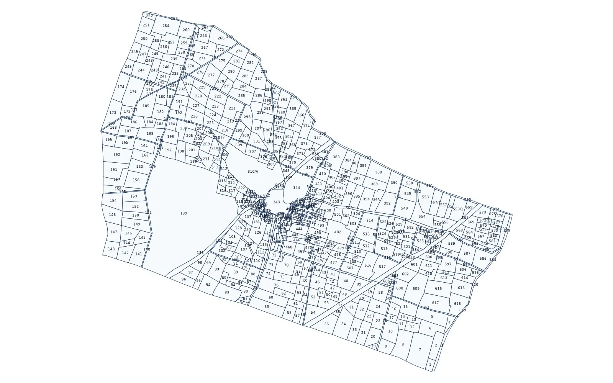

Rajasthan revenue map: how to read a village map with khasra numbers

In Rajasthan the revenue map is the village map kept with the land records: one sheet (or a few sheets for a large village) on which every plot of land is drawn and given a khasra number. People search for it as the revenue map, the village map with khasra numbers, the cadastral map or simply the naksha. Whatever the name, it is the drawing that tells you where a khasra lies, which khasras touch it and where the village ends. This guide explains how to read it and how it is used on land projects.
1. Where the revenue map comes from
The village maps were drawn during land surveys and settlements, plot by plot, to a fixed scale on paper. They are kept up by the revenue department: the patwari of the patwar halka holds the village map and the records of the village, and the tehsil keeps the records of all its villages. Many of these maps can now be seen online on the state's Bhu-Naksha viewer, chosen by district, tehsil and village.
2. Reading the khasra numbers
- Every closed shape on the map is a plot, and the number written inside it is its khasra number.
- Numbers usually run in a sequence across the village, so neighbouring plots often carry close numbers.
- When a plot is divided, the parts get numbers such as 245/1 and 245/2, or a letter after the parent number; on an old sheet the division may not be drawn yet even though the record shows it.
- Very small plots near the settlement can be too small for the number to fit; the number is then written beside the plot or with a short leader line.
3. Roads, water and the abadi
Not every numbered plot is a field. Cart tracks and roads (rasta), canals, drains (nala), ponds and tanks are drawn as long or rounded plots and carry their own khasra numbers too. The abadi - the inhabited part of the village - is usually shown as one block. These plots matter on a project: a track crossing your land block is a separate khasra, normally government land, and it does not belong to the holders on either side.
4. The village edge
The outer line of the outer plots is the revenue (cadastral) village boundary. It is the edge that counts for land records, and it can differ from the boundary in census maps or on a road map. Where two villages meet, both maps should show the same line; in practice the old sheets do not always agree exactly, which is one reason a project area across several villages needs the maps to be joined with care.
5. Linking the map to the jamabandi
The map does not say who holds a khasra or what kind of land it is. That comes from the jamabandi (record of rights), which lists each khasra with its khata, holders, shares, area and land class. Reading the two together answers the usual questions: which plots are private khatedari land, which are government land, and which are land such as grazing land (charagah), roads or water bodies that cannot simply be allotted. Areas in the record are usually in hectares; local bigha values differ across the state, so convert from the recorded unit.
6. Why the map needs georeferencing
A scanned or on-screen village map has paper coordinates only. To use it with GPS points, satellite imagery or engineering drawings, it has to be georeferenced - fitted to real coordinates such as WGS 84 latitude / longitude or UTM metres - and each plot digitized as a polygon with its khasra number. The fit should be checked on satellite imagery across the whole village: field bunds, tracks and canals on the image should run along the plot lines.
7. Common uses
- Checking which khasras fall inside a proposed solar, wind or industrial site
- Listing the khasras crossed by a transmission line, road or pipeline route
- Finding government land and grazing land in and around a project area
- Preparing a khasra-wise land schedule with village, area and land class
8. Limits to keep in mind
The revenue map shows the record as drawn; recent divisions, conversions and new roads may not be on it yet, and the record of rights at the tehsil remains the legal source. A digitized, georeferenced map is a planning base. Where a line decides ownership or compensation, a DGPS or Total Station survey on the ground is the next step.
9. What we deliver
We turn the Rajasthan village map into a georeferenced GIS file: every khasra as a numbered polygon, checked against satellite imagery, with the village boundary inside the same files, in KML for Google Earth, DWG / DXF for AutoCAD, SHP for QGIS or ArcGIS and an Excel list of khasras and areas. Land categories can be colour-coded from the record on request. BHU-NETRA Map Service is a private service and is not connected with any state government.
See the free sample on the Rajasthan khasra map page, check your village with the village checker, read Rajasthan Bhu-Naksha on a satellite map and how to check government land in a village, or ask for a quotation.
Need khasra maps or a survey?
Georeferenced and digitized khasra maps in KML, DWG, SHP and Excel for 20 states, plus DGPS, Total Station, topographic and drone surveys. Single village orders welcome.